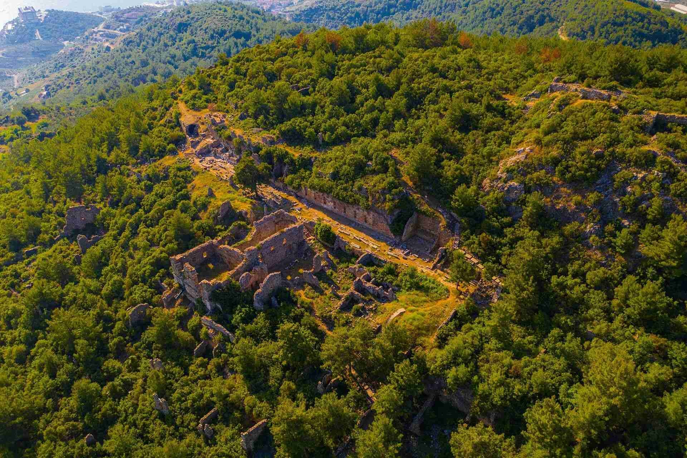

|  |
Kent İmparator Tiberius döneminde “Syedreon” adıyla kendi sikkesini basmaya başlar. İmparator Gallienus dönemine (MS 253-268) kadar sikke basımının devam ettiği görülür. Günümüzde gözlenebilen yapıların plan ve teknik özellikleri, MS 2.- 4. yüzyıllar arasında Syedra’nın en parlak dönemini yaşamış olduğunu gösterir. Mimari kalıntılar dışında, bu dönemlere ait epigrafik bulgular da bunu doğrular niteliktedir. Sarnıçlarının kapasitesine yönelik araştırmalara göre, bu dönemde Syedra’da yaklaşık 4.000-5.000 kişinin yaşamış olabileceği öne sürülmüştür. Syedra’nın, Roma imparatoru Septimius Severus’un MS 194 yılında Pescennius Niger’e karşı verdiği mücadelede İmparator’un yanında yer aldığı ele geçen yazıtlardan anlaşılmaktadır.
Hamam, mezar gibi yapıların karakterine bakıldığında özellikle MS 3. yüzyılın ikinci yarısında yoğun bir yapılaşmanın olduğu gözlenmektedir. Bu duruma bu dönemde Roma’nın doğu eyaletlerindeki askeri hareketliliğin de etkisi olmalıdır. Batı Dağlık Kilikia’nın bazı kentlerinde ele geçen mezar yazıtlarından, emekli askerlerin bölgeye yerleştiği anlaşılmaktadır. Belli ki, bu kişiler kentlerin kalkınmasına da etki etmiştir. Syedra Sütunlu Cadde’de ele geçen çok sayıda onurlandırma yazıtı da MS 2. yüzyıl sonları- 3. yüzyıl başlarındaki zenginliğin göstergeleri arasındadır. Kent, MS 314-324 yılları arasındaki eyalet listelerinde Isauria kentleri arasında geçer.
MS 370 yılındaki düzenlemelerle Isauria Eyaleti’nin sınırlarının daraltılmasıyla Pamphylia Eyaleti’ne dahil edilen kent Bizans Dönemi’nde Pamphylia Metropolitliği’ne bağlı bir piskoposluk merkezi olarak adı geçer. Diğer adı geçen kentlerde olduğu gibi Syedra’da da, Orta Çağ’da özellikle dinsel yapıların önemli yer tuttuğu anlaşılmaktadır. MS 7. yy.’dan itibaren başlayan Arap akınlarının ardından bölge Emevi ve Abbasi devletlerinin kontrolüne, 10. yy.’da ise tekrar Bizans egemenliğine girer.
|